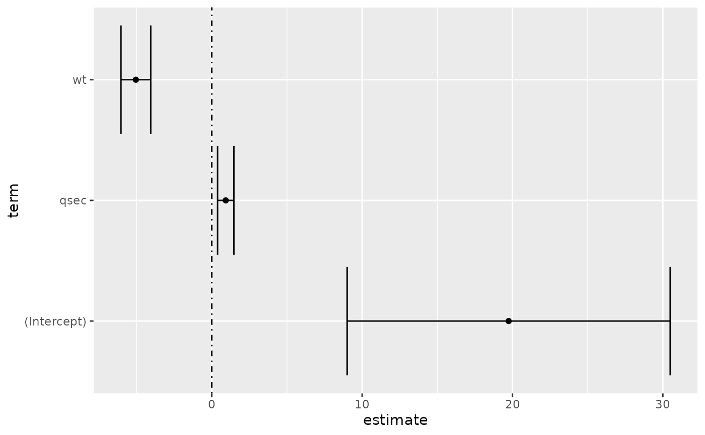

Augment accepts a model object and a dataset and adds
information about each observation in the dataset. Most commonly, this
includes predicted values in the .fitted column, residuals in the
.resid column, and standard errors for the fitted values in a .se.fit
column. New columns always begin with a . prefix to avoid overwriting
columns in the original dataset.
Users may pass data to augment via either the data argument or the
newdata argument. If the user passes data to the data argument,
it must be exactly the data that was used to fit the model
object. Pass datasets to newdata to augment data that was not used
during model fitting. This still requires that all columns used to fit
the model are present.
Augment will often behave differently depending on whether data or
newdata is given. This is because there is often information
associated with training observations (such as influences or related)
measures that is not meaningfully defined for new observations.
For convenience, many augment methods provide default data arguments,
so that augment(fit) will return the augmented training data. In these
cases, augment tries to reconstruct the original data based on the model
object with varying degrees of success.
The augmented dataset is always returned as a tibble::tibble with the
same number of rows as the passed dataset. This means that the
passed data must be coercible to a tibble. At this time, tibbles do not
support matrix-columns. This means you should not specify a matrix
of covariates in a model formula during the original model fitting
process, and that splines::ns(), stats::poly() and
survival::Surv() objects are not supported in input data. If you
encounter errors, try explicitly passing a tibble, or fitting the original
model on data in a tibble.
We are in the process of defining behaviors for models fit with various na.action arguments, but make no guarantees about behavior when data is missing at this time.
# S3 method for lm augment(x, data = model.frame(x), newdata = NULL, se_fit = FALSE, ...)
Arguments
| x | An |
|---|---|
| data | A |
| newdata | A |
| se_fit | Logical indicating whether or not a |
| ... | Additional arguments. Not used. Needed to match generic
signature only. Cautionary note: Misspelled arguments will be
absorbed in |
Details
When the modeling was performed with na.action = "na.omit"
(as is the typical default), rows with NA in the initial data are omitted
entirely from the augmented data frame. When the modeling was performed
with na.action = "na.exclude", one should provide the original data
as a second argument, at which point the augmented data will contain those
rows (typically with NAs in place of the new columns). If the original data
is not provided to augment() and na.action = "na.exclude", a
warning is raised and the incomplete rows are dropped.
Some unusual lm objects, such as rlm from MASS, may omit
.cooksd and .std.resid. gam from mgcv omits .sigma.
When newdata is supplied, only returns .fitted, .resid and
.se.fit columns.
See also
augment(), stats::predict.lm()
Other lm tidiers:
augment.glm(),
glance.glm(),
glance.lm(),
glance.svyglm(),
tidy.glm(),
tidy.lm.beta(),
tidy.lm(),
tidy.mlm()
Value
A tibble::tibble() with columns:
Cooks distance.
Fitted or predicted value.
Diagonal of the hat matrix.
The difference between observed and fitted values.
Standard errors of fitted values.
Estimated residual standard deviation when corresponding observation is dropped from model.
Standardised residuals.
Examples
#> # A tibble: 3 x 5 #> term estimate std.error statistic p.value #> <chr> <dbl> <dbl> <dbl> <dbl> #> 1 (Intercept) 19.7 5.25 3.76 7.65e- 4 #> 2 wt -5.05 0.484 -10.4 2.52e-11 #> 3 qsec 0.929 0.265 3.51 1.50e- 3glance(mod)#> # A tibble: 1 x 12 #> r.squared adj.r.squared sigma statistic p.value df logLik AIC BIC #> <dbl> <dbl> <dbl> <dbl> <dbl> <dbl> <dbl> <dbl> <dbl> #> 1 0.826 0.814 2.60 69.0 9.39e-12 2 -74.4 157. 163. #> # … with 3 more variables: deviance <dbl>, df.residual <int>, nobs <int># coefficient plot d <- tidy(mod) %>% mutate( low = estimate - std.error, high = estimate + std.error ) ggplot(d, aes(estimate, term, xmin = low, xmax = high, height = 0)) + geom_point() + geom_vline(xintercept = 0) + geom_errorbarh()augment(mod)#> # A tibble: 32 x 10 #> .rownames mpg wt qsec .fitted .resid .std.resid .hat .sigma .cooksd #> <chr> <dbl> <dbl> <dbl> <dbl> <dbl> <dbl> <dbl> <dbl> <dbl> #> 1 Mazda RX4 21 2.62 16.5 21.8 -0.815 -0.325 0.0693 2.64 2.63e-3 #> 2 Mazda RX4… 21 2.88 17.0 21.0 -0.0482 -0.0190 0.0444 2.64 5.59e-6 #> 3 Datsun 710 22.8 2.32 18.6 25.3 -2.53 -1.00 0.0607 2.60 2.17e-2 #> 4 Hornet 4 … 21.4 3.22 19.4 21.6 -0.181 -0.0716 0.0576 2.64 1.05e-4 #> 5 Hornet Sp… 18.7 3.44 17.0 18.2 0.504 0.198 0.0389 2.64 5.29e-4 #> 6 Valiant 18.1 3.46 20.2 21.1 -2.97 -1.20 0.0957 2.58 5.10e-2 #> 7 Duster 360 14.3 3.57 15.8 16.4 -2.14 -0.857 0.0729 2.61 1.93e-2 #> 8 Merc 240D 24.4 3.19 20 22.2 2.17 0.872 0.0791 2.61 2.18e-2 #> 9 Merc 230 22.8 3.15 22.9 25.1 -2.32 -1.07 0.295 2.59 1.59e-1 #> 10 Merc 280 19.2 3.44 18.3 19.4 -0.185 -0.0728 0.0358 2.64 6.55e-5 #> # … with 22 more rows#> # A tibble: 32 x 18 #> .rownames mpg cyl disp hp drat wt qsec vs am gear carb #> <chr> <dbl> <dbl> <dbl> <dbl> <dbl> <dbl> <dbl> <dbl> <dbl> <dbl> <dbl> #> 1 Mazda RX4 21 6 160 110 3.9 2.62 16.5 0 1 4 4 #> 2 Mazda RX… 21 6 160 110 3.9 2.88 17.0 0 1 4 4 #> 3 Datsun 7… 22.8 4 108 93 3.85 2.32 18.6 1 1 4 1 #> 4 Hornet 4… 21.4 6 258 110 3.08 3.22 19.4 1 0 3 1 #> 5 Hornet S… 18.7 8 360 175 3.15 3.44 17.0 0 0 3 2 #> 6 Valiant 18.1 6 225 105 2.76 3.46 20.2 1 0 3 1 #> 7 Duster 3… 14.3 8 360 245 3.21 3.57 15.8 0 0 3 4 #> 8 Merc 240D 24.4 4 147. 62 3.69 3.19 20 1 0 4 2 #> 9 Merc 230 22.8 4 141. 95 3.92 3.15 22.9 1 0 4 2 #> 10 Merc 280 19.2 6 168. 123 3.92 3.44 18.3 1 0 4 4 #> # … with 22 more rows, and 6 more variables: .fitted <dbl>, .resid <dbl>, #> # .std.resid <dbl>, .hat <dbl>, .sigma <dbl>, .cooksd <dbl># predict on new data newdata <- mtcars %>% head(6) %>% mutate(wt = wt + 1) augment(mod, newdata = newdata)#> # A tibble: 6 x 13 #> mpg cyl disp hp drat wt qsec vs am gear carb .fitted #> <dbl> <dbl> <dbl> <dbl> <dbl> <dbl> <dbl> <dbl> <dbl> <dbl> <dbl> <dbl> #> 1 21 6 160 110 3.9 3.62 16.5 0 1 4 4 16.8 #> 2 21 6 160 110 3.9 3.88 17.0 0 1 4 4 16.0 #> 3 22.8 4 108 93 3.85 3.32 18.6 1 1 4 1 20.3 #> 4 21.4 6 258 110 3.08 4.22 19.4 1 0 3 1 16.5 #> 5 18.7 8 360 175 3.15 4.44 17.0 0 0 3 2 13.1 #> 6 18.1 6 225 105 2.76 4.46 20.2 1 0 3 1 16.0 #> # … with 1 more variable: .resid <dbl>au <- augment(mod, data = mtcars) ggplot(au, aes(.hat, .std.resid)) + geom_vline(size = 2, colour = "white", xintercept = 0) + geom_hline(size = 2, colour = "white", yintercept = 0) + geom_point() + geom_smooth(se = FALSE)#>ggplot(au, aes(.hat, .cooksd)) + geom_vline(xintercept = 0, colour = NA) + geom_abline(slope = seq(0, 3, by = 0.5), colour = "white") + geom_smooth(se = FALSE) + geom_point()#># column-wise models a <- matrix(rnorm(20), nrow = 10) b <- a + rnorm(length(a)) result <- lm(b ~ a) tidy(result)#> # A tibble: 6 x 6 #> response term estimate std.error statistic p.value #> <chr> <chr> <dbl> <dbl> <dbl> <dbl> #> 1 Y1 (Intercept) 0.534 0.159 3.37 0.0119 #> 2 Y1 a1 0.527 0.165 3.19 0.0153 #> 3 Y1 a2 -0.439 0.156 -2.82 0.0259 #> 4 Y2 (Intercept) -0.0213 0.222 -0.0957 0.926 #> 5 Y2 a1 -0.259 0.231 -1.12 0.301 #> 6 Y2 a2 0.745 0.218 3.41 0.0113